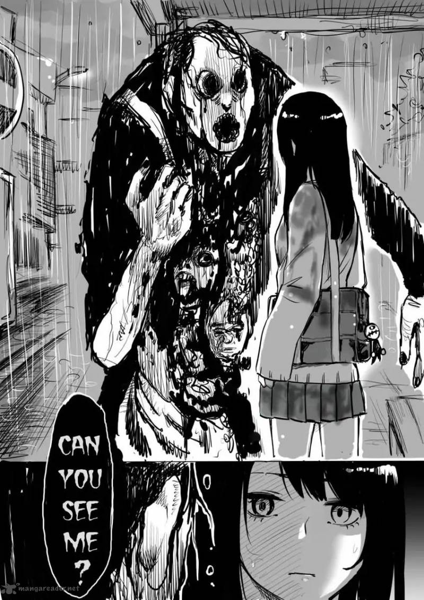

Horror
Mieruko-chan
by Tomoki Izumi
Synopsis
Miko Yotsuya is an ordinary high school girl who suddenly gains the terrifying ability to see grotesque and horrifying spirits lurking among ordinary people. Instead of running away or reacting with fear, she tries desperately to ignore them, hoping they will leave her alone. As the spirits become increasingly dangerous, Miko must maintain her composure while protecting herself and the people she cares about.
Chapter 1

Miko Yotsuya lives an ordinary school life until she suddenly begins seeing terrifying supernatural creatures that others cannot perceive
— End of chapter —